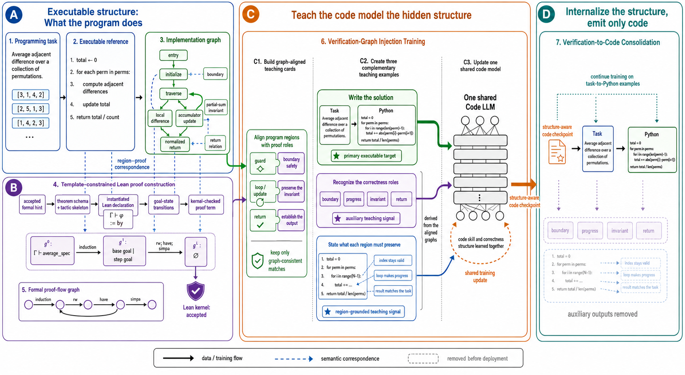
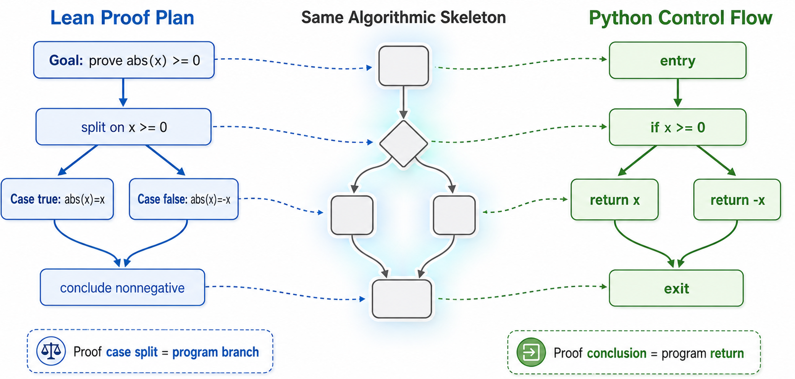

A template-constrained Lean pipeline produces kernel-checked proof traces yielding formal proof-flow graphs used as supervision for code generation.
Abstract
Code large language models (LLMs) can generate syntactically plausible programs that nevertheless violate hidden semantic constraints. Existing execution-feedback training methods identify whether a completed program fails, but provide limited supervision about how a correct solution should be organized. We introduce GraphAlignCoder, a training framework that transfers explicit correctness structure into code generation. GraphAlignCoder constructs an implementation graph that captures control and dependence among program regions. In parallel, a constrained Lean pipeline produces proof traces, from which we extract a formal proof-flow graph. The model first learns executable code together with graph-derived descriptions of why individual program regions are correct, and then consolidates this knowledge into code generation. GraphAlignCoder consistently outperforms the base model, code-only SFT, and CodeRL across all benchmarks. Compared with CodeRL, it increases the solved count from 38 to 50 on LiveCodeBench v6 and from 16 to 23 on BigCodeBench Hard, corresponding to relative gains of 31.6% and 43.8%, while also improving BigCodeBench Full from 359 to 363 tasks. The ablation study further shows that verification-graph injection produces the initial reasoning gain, while verification to code consolidation is essential for robust cross-benchmark transfer.
Problem
Code LLMs generate syntactically plausible programs that violate hidden semantic constraints. Execution-feedback training tells whether a program fails but gives limited supervision about how a correct solution should be organized.
Approach
GraphAlignCoder parses solutions into implementation graphs capturing control and dependence among program regions. A constrained Lean pipeline instantiates templates into kernel-checked goal transitions, producing a formal proof-flow graph. Region-proof correspondences yield training targets combining executable code, verification roles, and region-grounded conditions to update a shared code model. A consolidation stage then continues training on Python code alone, removing auxiliary outputs before deployment.

Figure 3: Overview of GraphAlignCoder . (A) We parse a solution into an implementation graph whose regions expose boundaries, updates, and return relations. (B) Template-constrained Lean construction turns formal hints into kernel-checked goal transitions and a formal proof-flow graph. (C) Region–proof correspondences produce three complementary training targets—executable code, verification roles

Figure 1: Shared Algorithmic Skeleton Between Lean Proof and Python Control Flow. A Lean proof plan exposes case splits, branch obligations, and final conclusions that align with the branch and return structure of an executable Python program.
Results
GraphAlignCoder outperforms base model, code-only SFT, and CodeRL across benchmarks, solving 50/175 LiveCodeBench v6, 23/148 BigCodeBench Hard, and 363/1140 BigCodeBench Full. Relative gains over CodeRL reach 31.6% and 43.8% on the two harder benchmarks.
Method
LCB v6
BCB Hard
BCB Full
Base
15
9
209
Code-only SFT
33
15
354
CodeRL
38
16
359
GraphAlignCoder
50
23
363
Pass@1 solved-task counts across methods and benchmarks